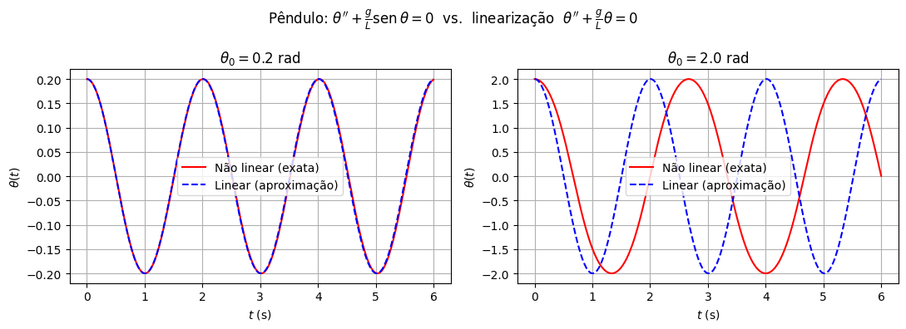
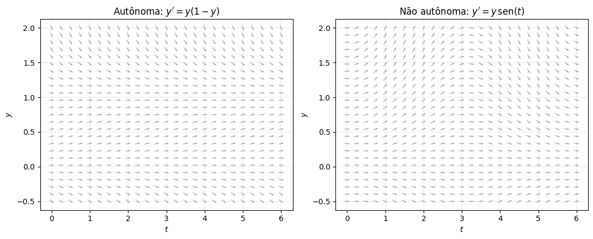

Classificação de EDs#
Agora que sabemos o que significa «resolver» uma equação diferencial, vale a pena organizar o terreno antes de aprendermos técnicas de resolução. Existem muitos «tipos» de equações diferenciais, e cada tipo tem seu próprio conjunto de ferramentas — o que funciona bem para um tipo pode não servir para outro (ou pode ser um baita desperdício de esforço).
Vamos organizar as equações diferenciais segundo alguns critérios. Pense neles como «etiquetas» que colamos em cada equação — uma mesma equação carrega várias etiquetas ao mesmo tempo.
Equações Diferenciais Ordinárias vs Parciais#
Já mencionamos essa distinção rapidamente na primeira aula, mas vale reforçar:
Uma Equação Diferencial Ordinária (EDO) envolve uma função incógnita de uma única variável independente, como \(y(t)\), e suas derivadas ordinárias \(y', y'', \dots\)
Uma Equação Diferencial Parcial (EDP) envolve uma função incógnita de duas ou mais variáveis independentes, como \(u(x,t)\), e suas derivadas parciais \(\partial u/\partial x\), \(\partial u/\partial t\), etc.
Exemplo (EDO). A equação da mola \(mx'' + cx' + kx = F(t)\): a incógnita \(x(t)\) depende só do tempo.
Exemplo (EDP). A equação do calor, que descreve como a temperatura \(u(x,t)\) se distribui ao longo de uma barra:
Aqui \(u\) depende de duas variáveis — posição \(x\) e tempo \(t\) — e a equação envolve derivadas parciais em relação a cada uma. Já vimos outros exemplos grandiosos de EDPs na aula passada: Navier–Stokes (fluidos) e as equações de campo de Einstein (relatividade).
EDPs geralmente exigem ferramentas bem mais avançadas (séries de Fourier, separação de variáveis, métodos numéricos como elementos finitos) e costumam ser tema de uma disciplina própria. Neste curso, vamos trabalhar exclusivamente com EDOs.
Ordem#
A ordem de uma equação diferencial é a ordem da maior derivada que aparece nela. Já usamos essa ideia desde a primeira aula, mesmo sem nomeá-la:
\(y' = ky\) é de primeira ordem (só aparece \(y'\));
\(mx'' + cx' + kx = F(t)\) é de segunda ordem (aparece \(x''\));
\(y''' + t\,y'' - y = 0\) seria de terceira ordem.
A ordem não é só uma curiosidade: ela determina quantas constantes arbitrárias aparecem na solução geral e, portanto, quantas condições iniciais são necessárias para fechar um PVI — como vimos na aula passada, uma equação de ordem \(n\) precisa, em geral, de \(n\) condições (\(y(t_0), y'(t_0), \dots, y^{(n-1)}(t_0)\)) para determinar uma única solução.
Neste curso, vamos estudar principalmente equações de primeira e segunda ordem — estas últimas aparecem naturalmente em sistemas mecânicos e elétricos, onde a segunda lei de Newton ou as leis de Kirchhoff trazem uma segunda derivada — além de sistemas, que, como veremos mais adiante, sempre podem ser vistos como «várias equações de primeira ordem acopladas».
Equações Lineares vs Não Lineares#
Essa é, talvez, a distinção mais importante do curso — vamos usá-la o tempo todo.
Definição. Uma EDO de ordem \(n\) é linear se pode ser escrita na forma
ou seja: \(y\) e todas as suas derivadas aparecem sozinhas, elevadas à primeira potência, sem produtos entre elas e sem estar «dentro» de outra função (como \(\text{sen}(y)\), \(e^y\), \(\sqrt{y}\), \(y^2\)…). Os coeficientes \(a_i(t)\) e o termo \(g(t)\) podem depender de \(t\) à vontade — isso não quebra a linearidade.
Se a equação não se encaixa nessa forma, ela é não linear.
Exemplos lineares:
Exemplos não lineares:
Por que essa distinção importa tanto?
Equações lineares têm uma teoria muito bem comportada: existência e unicidade global de soluções, o princípio da superposição (soma de soluções ainda é solução) e métodos algébricos sistemáticos que sempre funcionam — é basicamente o que faremos nas próximas semanas. Equações não lineares costumam ser mais realistas (a natureza raramente é linear!), mas raramente têm fórmula fechada; exigem métodos qualitativos (como o campo de direções) ou numéricos (como o método de Euler).
Homogênea vs Não Homogênea#
Dentro das equações lineares, \(a_n(t)y^{(n)}+\cdots+a_0(t)y = g(t)\), existe uma subdivisão importante:
Se \(g(t)\equiv 0\), a equação é homogênea.
Se \(g(t)\not\equiv 0\), a equação é não homogênea — o termo \(g(t)\) representa uma força, fonte ou entrada externa agindo sobre o sistema (a tensão de uma fonte num circuito, uma força externa numa mola, etc.).
Exemplos: \(y'' + y = 0\) é homogênea; \(y'' + y = \cos t\) é não homogênea (o termo \(\cos t\) é uma força externa oscilante). Fique de olho nesse vocabulário: os títulos dos próximos capítulos vão usar exatamente essas palavras (e as siglas h e nh)!
Coeficientes Constantes vs Variáveis#
Ainda dentro das equações lineares, olhamos para os coeficientes \(a_i(t)\):
Se cada \(a_i\) é um número fixo (não depende de \(t\)), a equação tem coeficientes constantes — como \(mx''+cx'+kx=0\), em que \(m, c, k\) são fixos.
Se algum \(a_i\) depende de \(t\), os coeficientes são variáveis — como \(t^2y''-3ty'+y=0\).
Equações lineares com coeficientes constantes têm um método de solução direto e algébrico (a chamada «equação característica»), e serão nosso foco principal. Coeficientes variáveis, em geral, exigem técnicas mais avançadas (como séries de potências), que ficam fora do escopo deste curso.
Uma observação sobre equações não-lineares#
Uma técnica de engenharia muito comum é linearizar uma equação não linear perto de um ponto de interesse, trocando-a por uma aproximação linear mais fácil de analisar. Exemplo clássico: para ângulos pequenos, \(\text{sen}\,\theta \approx \theta\), e a equação não linear do pêndulo vira a equação linear (e bem mais simples) \(\theta'' + (g/L)\theta = 0\). Vamos comparar as duas na prática:
import numpy as np
import matplotlib.pyplot as plt
from scipy.integrate import odeint
g, L = 9.8, 1.0
def pendulo_nao_linear(y, t):
theta, omega = y
return [omega, -(g/L)*np.sin(theta)]
def pendulo_linear(y, t):
theta, omega = y
return [omega, -(g/L)*theta]
t = np.linspace(0, 6, 400)
fig, axs = plt.subplots(1, 2, figsize=(11, 4))
for theta0, ax in zip([0.2, 2.0], axs):
sol_nl = odeint(pendulo_nao_linear, [theta0, 0], t)
sol_l = odeint(pendulo_linear, [theta0, 0], t)
ax.plot(t, sol_nl[:, 0], 'r', label="Não linear (exata)")
ax.plot(t, sol_l[:, 0], 'b--', label="Linear (aproximação)")
ax.set_title(fr"$\theta_0={theta0}$ rad")
ax.set_xlabel("$t$ (s)"); ax.set_ylabel(r"$\theta(t)$")
ax.legend(); ax.grid(True)
plt.suptitle(r"Pêndulo: $\theta''+\frac{g}{L}\text{sen}\,\theta=0$ vs. linearização $\theta''+\frac{g}{L}\theta=0$")
plt.tight_layout()
plt.show()

Para o ângulo pequeno (\(\theta_0=0{,}2\) rad, cerca de \(11°\)), a aproximação linear (linha azul tracejada) praticamente coincide com a solução exata (vermelha) — a linearização funciona muito bem. Já para o ângulo grande (\(\theta_0=2\) rad, mais de \(100°\)), as duas curvas se descolam rapidamente: a aproximação linear erra até o período da oscilação. Isso ilustra bem o que «não linear» significa na prática: o comportamento pode ser bem mais rico — e mais difícil de prever — do que o de uma equação linear.
Sistemas vs Equações Escalares#
Uma equação escalar envolve uma única função incógnita, \(y(t)\).
Um sistema de EDs envolve várias funções incógnitas, \(x_1(t), x_2(t), \dots, x_n(t)\), relacionadas por várias equações simultaneamente.
Já vimos vários sistemas na aula passada, embora sem chamá-los assim: o modelo SIR (três incógnitas: \(S\), \(I\), \(R\)) e as equações de Navier–Stokes. Outros exemplos clássicos:
Predador-presa (Lotka–Volterra): população de presas \(x(t)\) e predadores \(y(t)\), $\( x' = ax - bxy, \qquad y' = -cy + dxy. \)$
Circuitos elétricos com múltiplas malhas, ou sistemas mecânicos com várias massas acopladas (por exemplo, um prédio de vários andares) — cada malha ou massa contribui com uma equação, e todas ficam acopladas entre si.
Um fato importante: toda equação escalar de ordem \(n\) pode ser reescrita como um sistema de \(n\) equações de primeira ordem, introduzindo as derivadas como novas incógnitas. Por exemplo, a equação da mola
vira, chamando \(v = x'\),
Esse truque — chamado redução de ordem — é extremamente útil, porque boa parte dos métodos numéricos (como o método de Euler, que já vimos) e boa parte da teoria são desenvolvidos diretamente para sistemas de primeira ordem. Vamos explorar isso a fundo mais adiante, no capítulo de Sistemas de EDs Lineares.
Tipos importantes de EDs de 1ª ordem#
Boa parte do curso vai começar justamente pelas equações de primeira ordem, \(y'=f(t,y)\). Dentro delas, três formas especiais aparecem com tanta frequência — e têm técnicas de solução tão diretas — que merecem nome próprio. São exatamente os três primeiros métodos que vamos aprender.
Equações lineares#
O caso \(n=1\) da forma linear que vimos acima fica
Já vimos um exemplo: \(y' + 2y = e^{-t}\). Resolvê-las vai envolver uma técnica elegante chamada fator integrante, que transforma o lado esquerdo numa derivada de produto — vamos ver isso em detalhe em breve.
Equações separáveis#
Uma equação é separável quando pode ser escrita na forma
ou seja, o lado direito se fatora em uma parte que só depende de \(t\) e outra que só depende de \(y\). Nesse caso, «separamos» as variáveis e integramos os dois lados — exatamente como já fizemos para resolver \(y'=ky\):
Aliás — reparou? A equação \(y'=ky\) que resolvemos há duas aulas já era separável (com \(h(y)=y\) e \(g(t)=k\))! As categorias que estamos vendo não são compartimentos estanques: uma mesma equação pode se encaixar em várias delas ao mesmo tempo.
Equações autônomas#
Uma equação de primeira ordem é autônoma quando \(f\) não depende explicitamente de \(t\):
Repare que toda equação autônoma já é automaticamente separável (com \(g(t)\equiv 1\)) — mas ela ganha um tratamento especial porque, geometricamente, seu campo de direções tem uma propriedade única: não muda com o tempo.
Exemplo: o crescimento logístico, \(y' = ry\left(1-\dfrac{y}{K}\right)\) — a taxa de crescimento depende só da população atual, não de que dia é hoje. Compare com uma equação não autônoma, em que o campo realmente muda ao longo do tempo:
def f_autonoma(y, t):
return y*(1 - y)
def f_nao_autonoma(y, t):
return y*np.sin(t)
t_grid = np.linspace(0, 6, 25)
y_grid = np.linspace(-0.5, 2, 25)
T, Y = np.meshgrid(t_grid, y_grid)
fig, axs = plt.subplots(1, 2, figsize=(11, 4.5))
for f, titulo, ax in [(f_autonoma, r"Autônoma: $y'=y(1-y)$", axs[0]),
(f_nao_autonoma, r"Não autônoma: $y'=y\,\text{sen}(t)$", axs[1])]:
dT = np.ones(T.shape)
dY = f(Y, T)
Lnorm = np.sqrt(dT**2 + dY**2)
ax.quiver(T, Y, dT/Lnorm, dY/Lnorm, color='gray', alpha=0.7, pivot='mid')
ax.set_title(titulo)
ax.set_xlabel("$t$"); ax.set_ylabel("$y$")
ax.grid(True, linestyle='--', linewidth=0.3)
plt.tight_layout()
plt.show()

Repare na diferença: no campo autônomo (esquerda), a inclinação das setas depende só da altura \(y\) — cada linha horizontal tem sempre a mesma inclinação, não importa o instante \(t\). É como se o campo fosse «sempre o mesmo filme», só que começando em momentos diferentes; por isso equações autônomas têm equilíbrios bem definidos (retas horizontais onde \(y'=0\), aqui em \(y=0\) e \(y=1\)). Já no campo não autônomo (direita), as setas mudam de direção conforme \(t\) avança — o comportamento realmente depende de quando você observa o sistema.
Essa invariância no tempo é o que vai nos permitir, mais adiante, analisar equações autônomas de forma totalmente geométrica — através da chamada linha de fase — sem precisar resolver a equação explicitamente.
Note que essas três categorias se sobrepõem: a equação \(y'=ky\), por exemplo, é linear, separável e autônoma ao mesmo tempo. É por isso que vamos estudá-las nessa ordem: primeiro o método mais geral (linear), depois um método mais amplo, mas restrito a casos fatoráveis (separável), e por fim um olhar puramente geométrico e qualitativo, sem precisar resolver nada (autônomas).
Resumo: um mapa das classificações#
Critério |
Categorias |
Exemplo |
|---|---|---|
Variáveis independentes |
Ordinária (EDO) / Parcial (EDP) |
\(y'=ky\) / \(u_t = \alpha u_{xx}\) |
Ordem |
1ª, 2ª, …, \(n\)-ésima |
\(y'=ky\) (1ª) / \(mx''+cx'+kx=0\) (2ª) |
Estrutura |
Linear / Não linear |
\(y'+2y=e^{-t}\) / \(y'=y^2\) |
Termo forçante (caso linear) |
Homogênea / Não homogênea |
\(y''+y=0\) / \(y''+y=\cos t\) |
Coeficientes (caso linear) |
Constantes / Variáveis |
\(y''-y=0\) / \(t^2y''-3ty'+y=0\) |
Número de incógnitas |
Escalar / Sistema |
\(x''+kx=0\) / SIR, Lotka–Volterra |
Dependência do tempo (1ª ordem) |
Autônoma / Não autônoma |
\(y'=ry(1-y/K)\) / \(y'=r(t)y\) |
Essas etiquetas não são só «burocracia matemática»: elas dizem exatamente qual ferramenta usar. O restante do curso está organizado justamente seguindo esse mapa — começando pelas equações mais simples e progressivamente relaxando cada hipótese.
O que vem a seguir#
Antes de começar a resolver sistematicamente, vamos dar um passo atrás e ver de onde as equações diferenciais realmente vêm: como transformar uma situação real — um tanque enchendo, um circuito, uma população — em uma equação diferencial. É o processo de modelagem, tema da próxima aula.